TPMS and lattice catalog#
pyvcad_metamaterials supplies nine periodic implicit cells, ten graph cells, and
seven face/plate cells. This guide compares those cells on consistent rectangular
maps, then uses ordinary CSG to fill more familiar part geometries.
Build a finite rectangular map#
Every catalog builder receives a CellMap first:
import pyvcad as pv
import pyvcad_metamaterials as mm
cell_map = mm.rectangular_cell_map(
(pv.Vec3(-15.0, -15.0, -15.0), pv.Vec3(15.0, 15.0, 15.0)),
cells=(3, 3, 3),
)
Use cells=(nu, nv, nw) when exact repetition count and phase matter. Use cell_size=... when approximate world spacing is more convenient. cell_size is converted to integer counts by rounding upward, so the requested world bounds remain exact and the realized spacing adjusts slightly to fit them.
TPMS catalog#
The names in mm.TPMS_NAMES can be passed to mm.tpms(...), and each also has a named helper such as mm.gyroid(...) or mm.schwarz_p(...).

{kind=link}
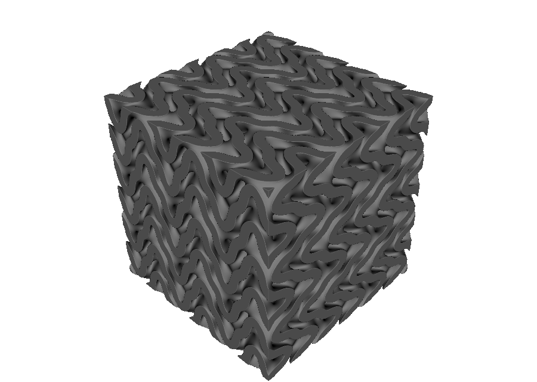
{kind=link}
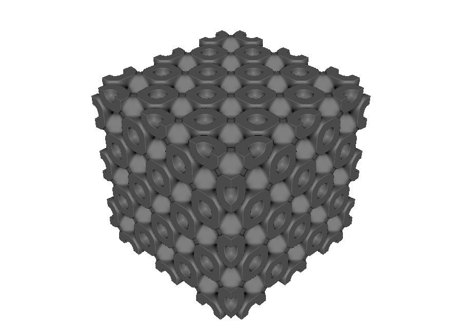


These cells are periodic trigonometric level-set approximations. They provide repeatable engineering surfaces, but the approximation itself is not a proof of zero mean curvature everywhere.
Fischer-Koch S and F-RD use the published level-set definitions summarized by Abdelaal and Eldesouky. The catalog provides geometry; it does not attach a topology-independent stiffness, strength, Poisson ratio, or energy-absorption claim.
The complete interactive gallery is 02_tpms_gallery.py.
Sheet and solid modes#
sheet = mm.gyroid(cell_map, mode="sheet", wall_thickness=1.6)
solid = mm.gyroid(cell_map, mode="solid", level=0.0)


In sheet mode, wall_thickness is the requested wall thickness in millimetres. In solid mode, level shifts the dividing surface and changes the retained labyrinth. Standard TPMS cells use the local map metric so those controls remain world-unit quantities when the cells are deformed.
See 01_tpms_gyroid.py for the side-by-side interactive example.
Graph lattice catalog#
Graph lattices use normalized vertices and edges, then map each repeated segment into world space. mm.LATTICE_NAMES lists the built-in catalog.


{kind=link}
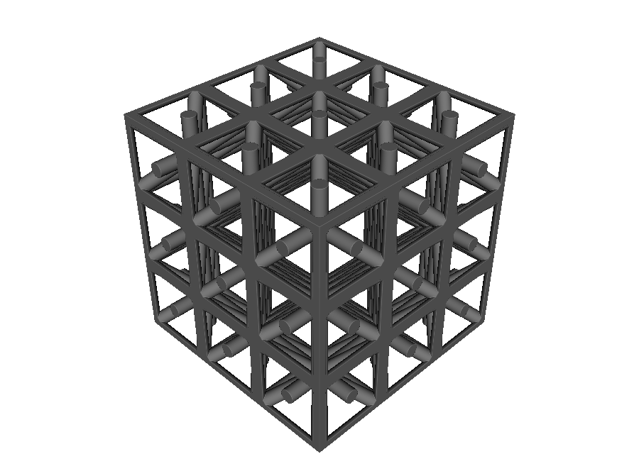
{kind=link}
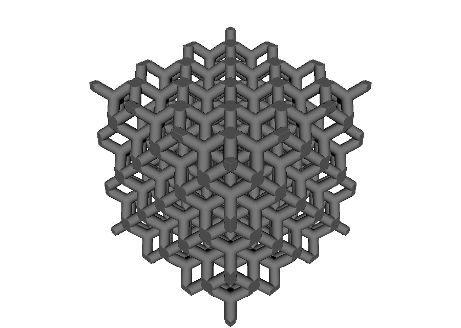
{kind=link}
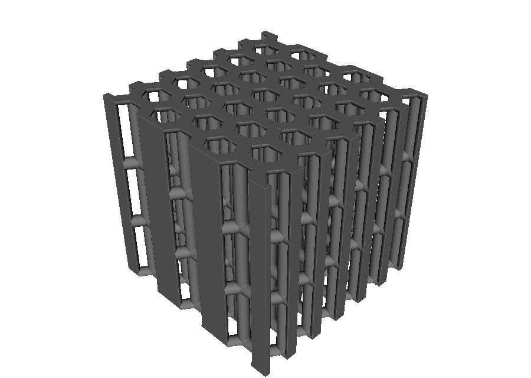
{kind=link}
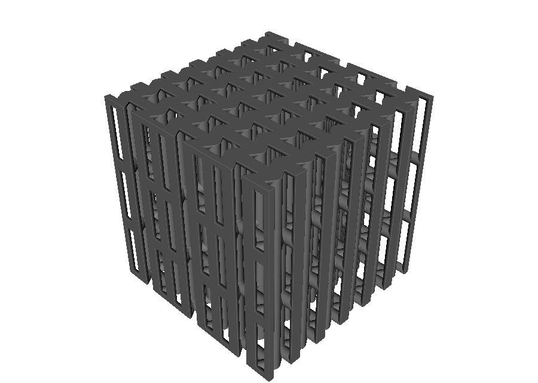
lattice = mm.octet(
cell_map,
beam_radius=0.8,
node_radius=0.9,
curve_tolerance=0.05,
)
beam_radius controls strut radius in millimetres. node_radius optionally overrides the joint radius; if omitted, joints follow the beam field. curve_tolerance controls subdivision of beams that become curved under a non-linear map.
See 03_strut_lattices.py for the complete interactive catalog.
To define your own normalized vertices and edges, continue with
Custom unit cells.
isotruss names the SC+BCC+SCC graph. Equal beam radii do not by themselves
guarantee an isotropic effective material. That claim requires an appropriate
member-radius ratio and mechanical characterization.
The new graph presets retain explicit junctions:
Name |
Vertices |
Edges |
Construction |
|---|---|---|---|
|
15 |
26 |
cube edges + center-to-corner + center-to-face-center |
|
22 |
32 |
FCC sites joined to eight tetrahedral sites |
|
32 |
48 |
extruded regular-hexagonal edge network |
|
32 |
48 |
extruded re-entrant hexagonal edge network |
The counts describe one authored cell before neighboring periodic vertices are welded.
The two prism cells use a rectangular honeycomb supercell. For regular hexagons or the default re-entrant geometry, preserve the reference U/V pitch ratio:
ratio = mm.hex_prism_reference_aspect_ratio()
cell_map = mm.rectangular_cell_map(
(pv.Vec3(0.0, 0.0, 0.0), pv.Vec3(30.0 * ratio, 30.0, 18.0)),
cells=(3, 3, 3),
)
root = mm.hex_prism_edge(cell_map, beam_radius=0.6)
Changing that map ratio deliberately stretches the cell. For a parameterized
re-entrant cell, use mm.reentrant_hex_prism_reference_aspect_ratio(...) with
the same angle and rib ratio. The default (h/l=2), (-30^\circ) geometry
follows the conventional re-entrant hexagonal parameterization described by
Zhang and Yang.
Face and plate lattice catalog#
Face lattices thicken tiled center surfaces into walls. This is geometrically different from replacing the same diagram with beams.
{kind=link}
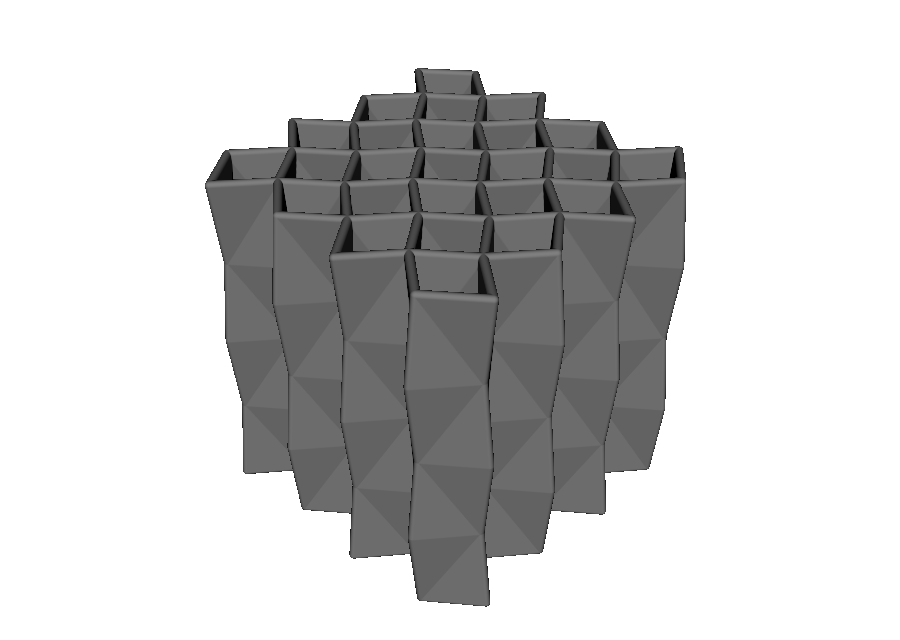
{kind=link}
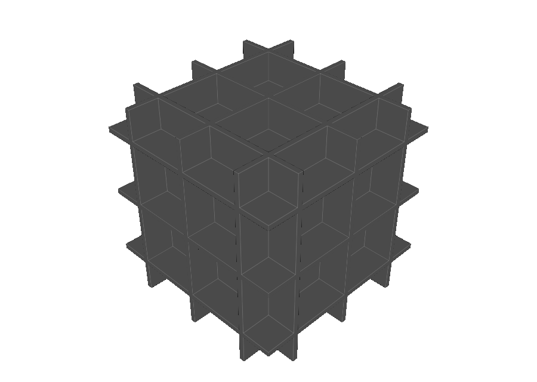
{kind=link}
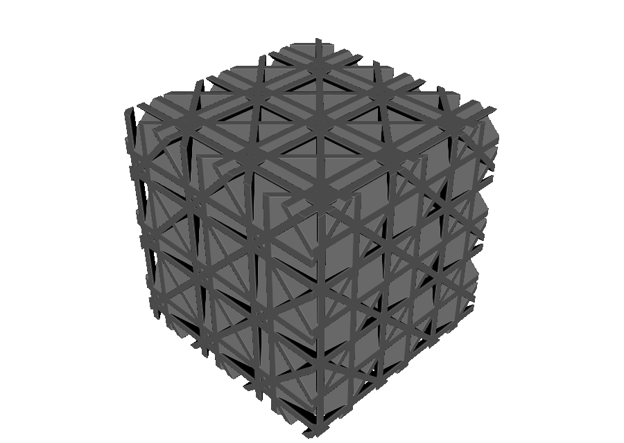
{kind=link}
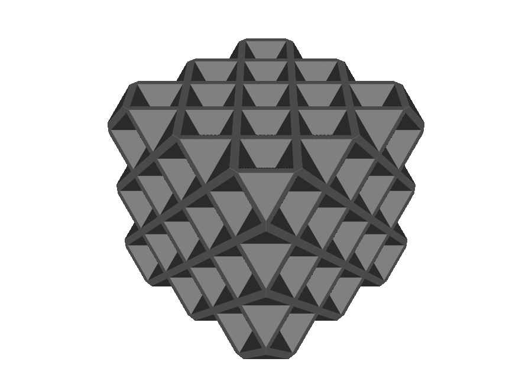
{kind=link}
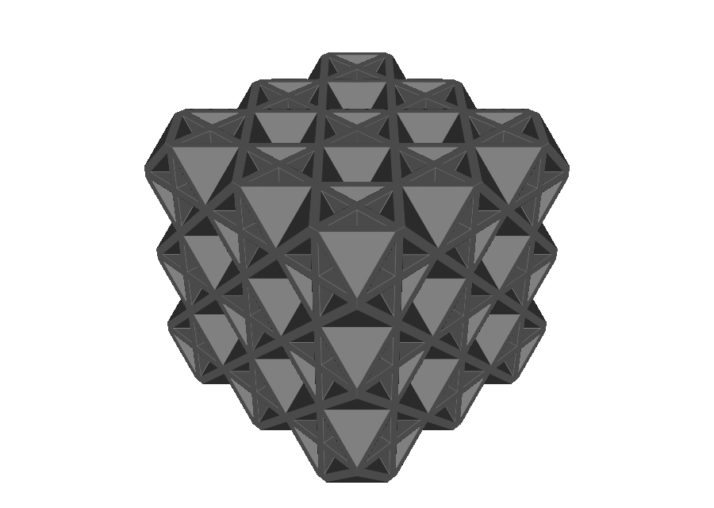
{kind=link}
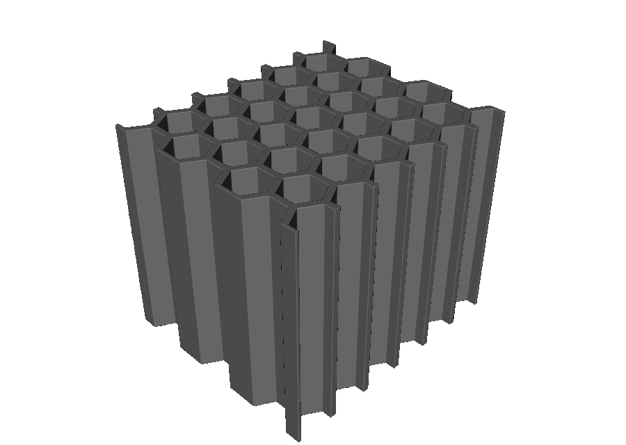
{kind=link}
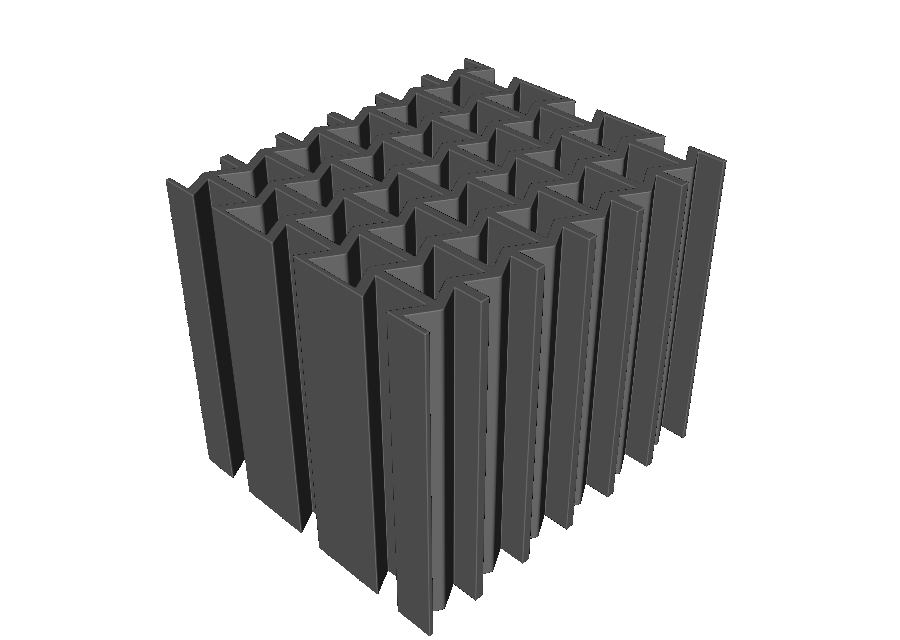
The crystallographic plate cells use the conventional plane families:
Name |
Plate family |
|---|---|
|
three orthogonal {100} families |
|
six {110} families |
|
four {111} families |
|
combined {100}+{111} families |
mm.octet_plate(...) is a documented alias for
mm.face_centered_cubic_plate(...). The cubic+octet helper keeps the two wall
thicknesses independent:
root = mm.cubic_octet_plate(
cell_map,
cubic_wall_thickness=0.75, # mm
octet_wall_thickness=0.55, # mm
)
The independent thicknesses are important: cubic+octet plate studies use the family ratio as a mechanical design variable rather than treating the hybrid as one uniformly thick sheet. See Crook et al. for an experimental cubic+octet system and its manufacturing considerations.
The re-entrant honeycomb exposes its geometric controls directly:
ratio = mm.reentrant_hex_prism_reference_aspect_ratio(
angle_degrees=-30.0,
rib_ratio=2.0,
)
root = mm.reentrant_honeycomb(
cell_map,
wall_thickness=0.7, # mm
angle_degrees=-30.0,
rib_ratio=2.0, # h/l
)
Use the returned ratio when constructing the map if the requested member angle
must be preserved. See
05_face_lattices.py
for a runnable comparison.
Warning
Three-dimensional plate lattices can create closed cells that trap resin, powder, or support material. Confirm drainage and cleaning access for the intended manufacturing process. The catalog topologies do not add drain holes automatically.
Fill ordinary geometry#
Mapped structures are ordinary nodes, so lattice filling is an Intersection. Build a map over the target’s bounds, build the architected material, and clip it with the target geometry.
sphere = pv.Sphere(pv.Vec3(0.0, 0.0, 0.0), 16.0)
cell_map = mm.rectangular_cell_map(
(pv.Vec3(-17.0, -17.0, -17.0), pv.Vec3(17.0, 17.0, 17.0)),
cells=(4, 4, 4),
)
root = pv.Intersection(sphere, mm.gyroid(cell_map, wall_thickness=1.4))


For imported meshes, call prepare(...) before querying bounding_box(), then construct the rectangular map from the returned bounds. The complete examples are 04_lattice_in_shape.py, 10_benchy_gyroid_infill.py, and 11_teapot_lattice_infill.py.
Parameter summary#
Structure |
Topology |
Primary geometric controls |
|---|---|---|
TPMS sheet |
|
|
TPMS solid |
|
|
Graph lattice |
|
|
Plate or wall lattice |
|
|
Re-entrant honeycomb |
|
|
All of these scalar controls can also change across a design. Continue with Functionally graded metamaterial geometry for thickness, radius, spacing, and topology, or Attribute modeling for named material and process fields.